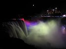

|
|
|
lornaland.co.uk Holidays Photo Gallery Lornaland Natter USA 2005 Journal Menu...New YorkBoston Cooperstown Buffalo Las Vegas Death Valley Yosemite National Park San Francisco San Simeon Los Angeles San Diego Niagara Falls Pictures |
Buffalo & Niagara Falls10th - 11h September 2005Saturday 10th September 2005 (...by Dan)
Lorna at four pancakes, with local maple syrup will I managed five! I suspect there were many more waiting in the kitchen but there's a limit to even my appetite! A long drive ahead of us, we were out of the B&B by 9.00am. We stopped off in Cooperstown for the farmers market which featured a range of veg that'd put Tescos to shame. Pumpkins the size of a small boy and cauliflower the size of your head for just a couple of dollars. We got three bottles of local maple syrup and general consumption Next stop was the Fly Creek Cider Mill, where we watched the cider being pressed and purchased some "hard cider". Cider in the USA is just apple juice and they treat alcoholic cider as something of a novelty. Lorna spent about $700 on goose food before we left. Next we went to a vineyard which turned out to be a half hour drive through cornfields, sweetcorn that is, not the English corn stuff. The Vineyard, called Nyagi's, turned out to be a tiny hut on the side of a small shallow hill. The girl in the hut was very friendly and gave us a taste of all the local wines. Some were good! I suspect she'd been trapped in her hut for years waiting for visitors. She assured us that other customers did turn up every now and again. We had to rush off to Buffalo after the winery as were due to meet Yvonne (whose my Mum's cousin, lord only knows what that makes her to me) Poor old Lorna had to get showered, hair washed and ready in next to no time. Luckily we found our hotel, The Holiday Inn Downtown without any problems. After a quick wash and brush up, we headed to Niagara Falls for pizza and wings. Everyone was very nice, which is more than can be said about the wings! After dinner, we parked up next to the falls to get a sneak peak before our scheduled trip the next day. The US side is like Blackpool with added curry vendors dotted about the place.  The falls themselves were spectacular, or as they say in these parts - "awesome", and it was good to see them all lit up.
Notes from Lorna... Sunday 11th September 2005Our day at Niagara Falls started with a lie-in (mainly due to us falling asleep and not setting the alarm!) followed by cold and manky pizza and wings from the night before. Finally we were on our way. I thought Dan had generously let me drive first, but soon his ulterior motive became apparent. We'd decided to head straight across the Rainbow bridge into Canada in order to get the best views of the falls. As I was driving, I had to deal with the customs man to ensure we were allowed to cross over for the day as Dan's family had been adamant we wouldn't be able to. As we thought, we crossed over easily. Once in Canada, we parked up and headed along the river to the falls. It wasn't hard to miss them, besides the mass crowds along every inch of railing, there was a misty haze surrounding them, created from the spray of the falls. After the obligatory hundred photos and hours of filming the falls, we headed off to our first attraction - The Journey Behind the Falls. I had a quick panic whilst queuing for tickets when I realised we didn't have any Canadian money but luckily everywhere in Niagara Falls accepts both Canadian and American dollars. Decked out in our stylish yellow rain ponchos, we headed down in the elevator. The Journey Behind the Falls takes you through tunnels to portals behind the waterfall. You can't see much, just gallons of water although we did get to see in one of them that the falls were flowing down past the portal quite a distance away. We headed back along the tunnels to the observation deck, just to the left of the Horseshoe Falls. It was cool to be so close to the falls and the poncho was very much needed. When the wind changed, you got a soaking from the spray. We weren't able to take too many photos or video footage due to the spray so we headed back inside and back to the elevators. Back at the top, we bought some yummy maple and chocolate fudge and found a place in the sun to sit and dry off. However, as soon as we were dry, we bought some sodas and headed off for another soaking, this time courtesy of the Maid of the Mist. I managed to loose one of the tickets almost instantly but luckily we found it again. Phew! This time we were decked out in fetching blue ponchos but we made the mistake of walking too fast down to the boat and ended up being the last ones on a very crowded boat. Luckily, we managed to find a not too bad spot at the front of the boat which gave us a decent view. We crawled up the Niagara River slowly towards the falls. The river was very rough and the boat battled to stay in place. It managed and we were treated to faces full of water. After about five minutes the boat started to turn slowly until the river helped it along by rushing us backwards away from the falls and back down to the docks. Once back on shore, we sat and had a drink and a bite to eat in the sun to dry, again. We realised that our day in Niagara was pretty much done so we wandered back to the car and back to America. From the Canadian side we could see and island on the American side which split the falls which we found out was Goat Island. We'd noticed an attraction over there so we headed over to have a look. We got the Cave of the Winds to find out it was a guided tour which disappointed us slightly but at only $8.00 per person it was the cheapest attraction of the day so we decided what the hell and bought some tickets. You even got free shoes! Once again, we were decked out in more fetching yellow ponchos along with our Niagara State Park Cave of the winds embossed sandals. We were disappointed once again when it seemed the tour wasn't actually a proper tour, just the guide walking in front showing you they way (not that it was hard to get lost) Still, we had pretty good views of the American Falls and could get some good shots. The the highlight of the tour revealed itself, the Hurricane Deck. Apart from the fact that the deck allows you to be almost completely in the falls which was great fun (Dan got soaking), what's amazing about it is that the decking can't stay up during the winter so has to be taken down and assembled each year. Someone's got to climb along the rocks and install the decking by hand, without safety ropes! You couldn't comprehend how it could be done just by looking at it. By the time we'd finished in Niagara it was 6.00pm and we headed back to the hotel to change for dinner. Where to eat wasn't a difficult choice to make, it had to be the Anchor Bar, home of my beloved Buffalo Wings (or chicken wings as they're called in Buffalo!) Due to last nights measly effort, we decided on a double order (20 pieces) of hot wings. Just in case that wasn't enough for us, we also ordered a Caesar salad and some Anchor chips (aka potato wedges) A big plate of wings arrived and we started to tuck in. Boy were they hot, we swear we got suicidal and if not, I'd hate to try them! The wings were delicious and the wings were nice too but as usual we ate till we felt sick so we just wandered back to the hotel for the night. |
 Breakfast at the
Breakfast at the